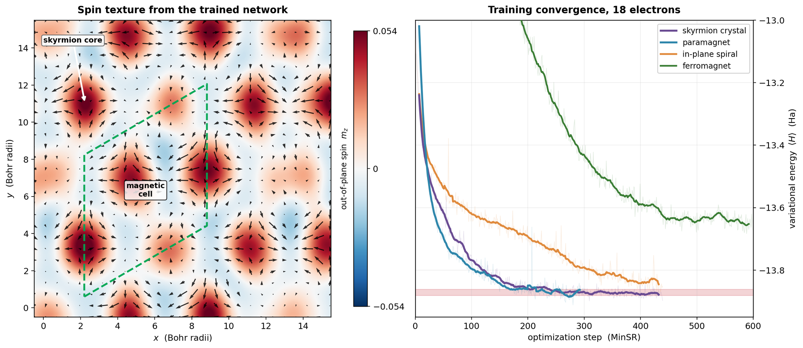

Machine learning · Neural quantum states
Neural Quantum States for Correlated Electrons
A transformer neural network that solves the quantum many-body problem — variational, GPU-accelerated, and validated to exact-diagonalization precision.

Left — a spin texture from the trained network: a skyrmion crystal, with out-of-plane spin in colour and in-plane spin as arrows winding around each core (the green rhombus is one magnetic cell). Right — the 18-electron training run: four candidate states, each optimized by natural-gradient (MinSR) variational Monte Carlo, converging to their energy plateaus.
The quantum many-body problem — finding the ground state of many interacting electrons — is exponentially hard. Neural quantum states (NQS) attack it by representing the wavefunction as a neural network and optimizing it with variational Monte Carlo.
I built a continuum NQS solver from the ground up: a Psiformer / transformer wavefunction for a two-dimensional multi-orbital electron gas with spin–orbit coupling and long-range Coulomb interaction, optimized by variational Monte Carlo with natural-gradient (MinSR) updates and Ewald-summed interactions, running on H200 GPUs and HPC clusters.
In plain terms — a transformer defines the wavefunction, and the training loop tunes it to minimize the energy. The full pipeline: a transformer wavefunction (left) trained by variational Monte Carlo with MinSR natural-gradient updates (right). Learnable components in red, fixed physics in grey.
The project is structured as an eleven-notebook ladder that adds one piece of physics at a time and validates each stage against an exact reference — exact diagonalization or published quantum Monte Carlo. At small sizes the network reaches exact-diagonalization precision and beats Hartree–Fock by a wide margin; the convergence panel above shows the scaled-up production run at 18 electrons, where several competing candidate states are each optimized to a tight energy plateau.
My contribution
Neural quantum states are an established idea — I build directly on DeepMind's FermiNet and Psiformer. The hard part of this kind of work isn't the network; it's making it trainable and correct for one specific, difficult problem. That's what I added:
- A training-stability method. At this problem's scale the optimizer gets trapped in the wrong solution — a common failure mode for these networks. Initializing the network from a cheap mean-field (Hartree–Fock) starting point reliably steers it into the right basin, turning an otherwise-stuck run into one that beats the mean-field baseline, on a ladder validated against exact diagonalization.
- A harder problem class. I extended these solvers from spin-simple systems to ones with strong spin–orbit coupling and multiple orbitals — the ingredients the magnetism I study actually requires.
- Conclusions scoped to the evidence. Every stage is checked against an exact reference, and the physics verdict is stated only as strongly as the data support — a candidate ordered phase turns out to be only marginally stable, and is reported as such.